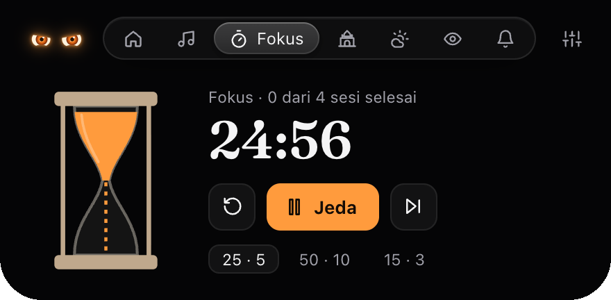
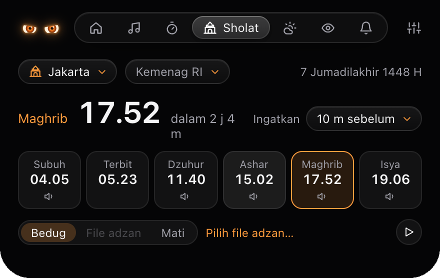
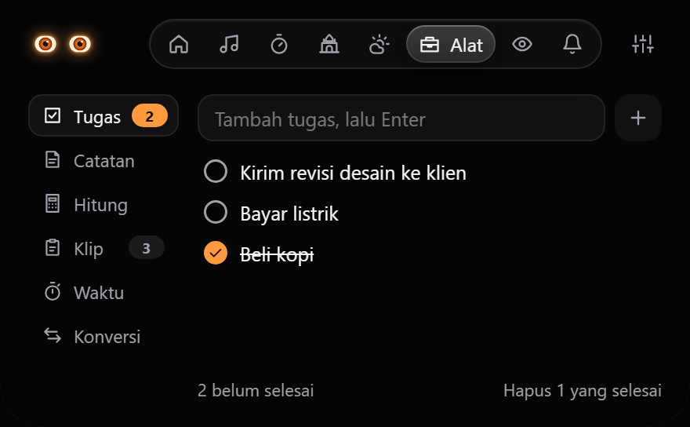

For macOS and Windows
A pair of eyes for the top of your screen.
Antique is a little notch at the top of your screen: wrapped around the camera notch on a Mac, hanging from the top edge on Windows. It follows your pointer, moves to your music, and shows a message, a focus timer or the next prayer time when it matters.
Try Antique
It also speaks up when a drive is plugged in, the battery runs low, or rain is on the way.
Click it and it opens up.
The notch grows into a small panel with your day in one place. Switch pages along the top, or open the settings window for everything else.



There are pages for music with synced lyrics, the weather, and notifications too.
Screenshots from the app in Indonesian. It speaks English too.
At home on both.
On a Mac
- It wraps around the notch, so it looks like part of the screen.
- Prefer it floating? Switch the shape to a small island in settings.
- The music equalizer needs macOS 14.2 or later.
On Windows
- It hangs from the top edge like a notch. Prefer it floating? Switch the shape to a small island in settings.
- Music comes from any player in the Windows media controls, like Spotify or YouTube in a browser.
- Find it in the tray, next to the clock. Windows 10 and 11.
On both, the settings live in a normal app window: eyes, music, focus, prayer times and alerts.
The launch film
The film didn't load. Open the video file instead.
28 seconds, no sound.
Make it yours.
Four eye styles, a notch or a floating island, and a size that fits your screen. All free. Pick one to try it on the screen above.
Download Antique
macOS
Disk image (.dmg), macOS 12 or later, Apple Silicon and Intel
Download for macOSFirst launch: if macOS blocks it, open System Settings, Privacy & Security, and choose Open Anyway.
Windows
Installer (.exe), Windows 10 and 11
Download for WindowsFirst launch: if Windows shows SmartScreen, choose More info, then Run anyway.